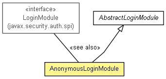

org.apache.wiki.auth.login
Class AnonymousLoginModule
java.lang.Object
 org.apache.wiki.auth.login.AbstractLoginModule
org.apache.wiki.auth.login.AnonymousLoginModule
org.apache.wiki.auth.login.AbstractLoginModule
org.apache.wiki.auth.login.AnonymousLoginModule
- All Implemented Interfaces:
- LoginModule
public class AnonymousLoginModule
- extends AbstractLoginModule

Logs in a user based solely on IP address; no other authentication is
performed. Barring a mis-configuration or I/O error, this LoginModule
always succeeds.
This module must be used with a CallbackHandler (such as
WebContainerCallbackHandler) that supports the following Callback
types:
HttpRequestCallback- supplies the IP address, which is used as
a backup in case no name is supplied.
After authentication, a generic WikiPrincipal based on the IP address will be
created and associated with the Subject.
- Since:
- 2.3
- See Also:
|
Field Summary |
protected static org.apache.log4j.Logger |
log
|
static String |
PROMPT
Bogus prompt sent to the callback handler. |
|
Method Summary |
boolean |
login()
Logs in the user by calling back to the registered CallbackHandler with an
HttpRequestCallback. |
| Methods inherited from class java.lang.Object |
clone, equals, finalize, getClass, hashCode, notify, notifyAll, toString, wait, wait, wait |
PROMPT
public static final String PROMPT
- Bogus prompt sent to the callback handler.
- See Also:
- Constant Field Values
log
protected static final org.apache.log4j.Logger log
AnonymousLoginModule
public AnonymousLoginModule()
login
public boolean login()
throws LoginException
- Logs in the user by calling back to the registered CallbackHandler with an
HttpRequestCallback. The CallbackHandler must supply the current servlet
HTTP request as its response.
- Specified by:
login in interface LoginModule- Specified by:
login in class AbstractLoginModule
- Returns:
- the result of the login; this will always be
true.
- Throws:
{@inheritDoc}
LoginException - if the authentication fails- See Also:
LoginModule.login()
Copyright © {inceptionYear}-2014 The Apache Software Foundation. All rights reserved.